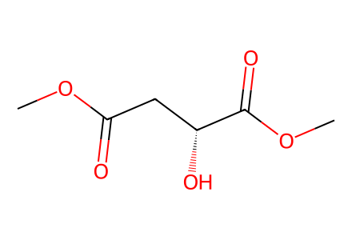
COC(=O)C[C@@H](O)C(=O)OC34 个分子记录、22 个制备事件、23 个操作记录、4 条路径。保留混合物与未知构型；化合物 15 名称/分子式冲突已标注。正文缺失，尚未达到全文全路线完成。
完整 JSON · 逐步 CSV · 路线序列 · SDF · HRMS 核对
| 事件 | 分子连接 | 报告产率 | Canonical reaction SMILES |
|---|---|---|---|
| E01 | 9 → S1 | S1: 86% | COC(=O)C[C@@H](O)C(=O)OC>>O=C1C[C@@H](O)CO1 |
| E02 | S1 + PMB-imidate → 11 | 11: 88% | COc1ccc(COC(=N)C(Cl)(Cl)Cl)cc1.O=C1C[C@@H](O)CO1>>COc1ccc(CO[C@H]2COC(=O)C2)cc1 |
| E03 | 11 → S2 | not reported | COc1ccc(CO[C@H]2COC(=O)C2)cc1>>COc1ccc(CO[C@H]2COC(O)C2)cc1 |
| E04 | S2 + propyl-phosphonium → 12 | not reported | CCC[P+](c1ccccc1)(c1ccccc1)c1ccccc1.COc1ccc(CO[C@H]2COC(O)C2)cc1.[Br-]>>CC/C=C\C[C@H](CO)OCc1ccc(OC)cc1 |
| E05 | 12 → 7 | 7: 68% | CC/C=C\C[C@H](CO)OCc1ccc(OC)cc1>>CC/C=C\C[C@H](C=O)OCc1ccc(OC)cc1 |
| E06 | 10 → S3 | S3: 99% | COC(=O)CCCCCCCC(=O)O>>COC(=O)CCCCCCCC(=O)Cl |
| E07 | S3 + bis-TMS-acetylene → 13 | 13: 78% | COC(=O)CCCCCCCC(=O)Cl.C[Si](C)(C)C#C[Si](C)(C)C>>COC(=O)CCCCCCCC(=O)C#C[Si](C)(C)C |
| E08 | 13 → S4 | S4: 99% | COC(=O)CCCCCCCC(=O)C#C[Si](C)(C)C>>COC(=O)CCCCCCC[C@@H](O)C#C[Si](C)(C)C |
| E09 | S4 + TBSCl → 14 | 14: 93% | CC(C)(C)[Si](C)(C)Cl.COC(=O)CCCCCCC[C@@H](O)C#C[Si](C)(C)C>>COC(=O)CCCCCCC[C@H](C#C[Si](C)(C)C)O[Si](C)(C)C(C)(C)C |
| E10 | 14 → 8 | 8: 96% | COC(=O)CCCCCCC[C@H](C#C[Si](C)(C)C)O[Si](C)(C)C(C)(C)C>>C#C[C@@H](CCCCCCCC(=O)OC)O[Si](C)(C)C(C)(C)C |
| E11 | 8 + 7 + nBuLi → 15 + 16 | 15: 20%; 16: 47% | C#C[C@@H](CCCCCCCC(=O)OC)O[Si](C)(C)C(C)(C)C.CC/C=C\C[C@H](C=O)OCc1ccc(OC)cc1.[CH2-]CCC.[Li+]>>C#C[C@@H](CCCCCCCC(O)(CCCC)CCCC)O[Si](C)(C)C(C)(C)C.CC/C=C\C[C@@H](OCc1ccc(OC)cc1)C(O)C#C[C@@H](CCCCCCCC(=O)OC)O[Si](C)(C)C(C)(C)C |
| E12 | 14 → S5 | not reported | COC(=O)CCCCCCC[C@H](C#C[Si](C)(C)C)O[Si](C)(C)C(C)(C)C>>CC(C)(C)[Si](C)(C)O[C@@H](C#C[Si](C)(C)C)CCCCCCCCO |
| E13 | S5 + DHP → 17 | 17: 84% | C1=COCCC1.CC(C)(C)[Si](C)(C)O[C@@H](C#C[Si](C)(C)C)CCCCCCCCO>>CC(C)(C)[Si](C)(C)O[C@@H](C#C[Si](C)(C)C)CCCCCCCCOC1CCCCO1 |
| E14 | 17 → 18 | 18: 98% | CC(C)(C)[Si](C)(C)O[C@@H](C#C[Si](C)(C)C)CCCCCCCCOC1CCCCO1>>C#C[C@@H](CCCCCCCCOC1CCCCO1)O[Si](C)(C)C(C)(C)C |
| E15 | 18 + 7 → 19 | 19: 54% | C#C[C@@H](CCCCCCCCOC1CCCCO1)O[Si](C)(C)C(C)(C)C.CC/C=C\C[C@H](C=O)OCc1ccc(OC)cc1>>CC/C=C\C[C@@H](OCc1ccc(OC)cc1)C(O)C#C[C@@H](CCCCCCCCOC1CCCCO1)O[Si](C)(C)C(C)(C)C |
| E16 | 19 → S6 | S6: 81% | CC/C=C\C[C@@H](OCc1ccc(OC)cc1)C(O)C#C[C@@H](CCCCCCCCOC1CCCCO1)O[Si](C)(C)C(C)(C)C>>CC/C=C\C[C@@H](OCc1ccc(OC)cc1)C(O)/C=C/[C@@H](CCCCCCCCOC1CCCCO1)O[Si](C)(C)C(C)(C)C |
| E17 | S6 → 20 | 20: 62% | CC/C=C\C[C@@H](OCc1ccc(OC)cc1)C(O)/C=C/[C@@H](CCCCCCCCOC1CCCCO1)O[Si](C)(C)C(C)(C)C>>CC/C=C\C[C@@H](OCc1ccc(OC)cc1)C(O)/C=C/[C@@H](CCCCCCCCO)O[Si](C)(C)C(C)(C)C |
| E18 | 20 → 6 | 6: 73% | CC/C=C\C[C@@H](OCc1ccc(OC)cc1)C(O)/C=C/[C@@H](CCCCCCCCO)O[Si](C)(C)C(C)(C)C>>CC/C=C\C[C@@H](OCc1ccc(OC)cc1)C(=O)/C=C/[C@@H](CCCCCCCC=O)O[Si](C)(C)C(C)(C)C |
| E19 | 6 → S7 | not reported | CC/C=C\C[C@@H](OCc1ccc(OC)cc1)C(=O)/C=C/[C@@H](CCCCCCCC=O)O[Si](C)(C)C(C)(C)C>>CC/C=C\C[C@@H](OCc1ccc(OC)cc1)C(=O)/C=C/[C@@H](CCCCCCCC(=O)O)O[Si](C)(C)C(C)(C)C |
| E20 | S7 → 21 | 21: 71% | CC/C=C\C[C@@H](OCc1ccc(OC)cc1)C(=O)/C=C/[C@@H](CCCCCCCC(=O)O)O[Si](C)(C)C(C)(C)C>>CC/C=C\C[C@@H](O)C(=O)/C=C/[C@@H](CCCCCCCC(=O)O)O[Si](C)(C)C(C)(C)C |
| E21 | 21 → S8 + S8-9epi | not reported | CC/C=C\C[C@@H](O)C(=O)/C=C/[C@@H](CCCCCCCC(=O)O)O[Si](C)(C)C(C)(C)C>>CC/C=C\C[C@H]1OC(=O)CCCCCCC[C@@H](O[Si](C)(C)C(C)(C)C)/C=C/C1=O.CC/C=C\C[C@H]1OC(=O)CCCCCCC[C@H](O[Si](C)(C)C(C)(C)C)/C=C/C1=O |
| E22 | S8 + S8-9epi → 5 + 5-9epi | not reported | CC/C=C\C[C@H]1OC(=O)CCCCCCC[C@@H](O[Si](C)(C)C(C)(C)C)/C=C/C1=O.CC/C=C\C[C@H]1OC(=O)CCCCCCC[C@H](O[Si](C)(C)C(C)(C)C)/C=C/C1=O>>CC/C=C\C[C@H]1OC(=O)CCCCCCC[C@@H](O)/C=C/C1=O.CC/C=C\C[C@H]1OC(=O)CCCCCCC[C@H](O)/C=C/C1=O |

COC(=O)C[C@@H](O)C(=O)OC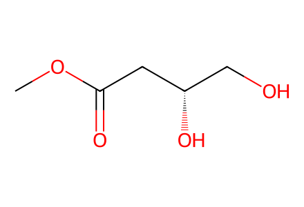
COC(=O)C[C@@H](O)CO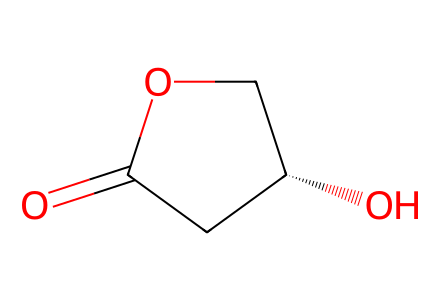
O=C1C[C@@H](O)CO1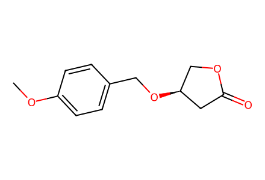
COc1ccc(CO[C@H]2COC(=O)C2)cc1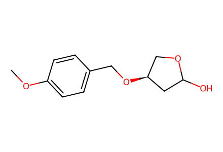
COc1ccc(CO[C@H]2COC(O)C2)cc1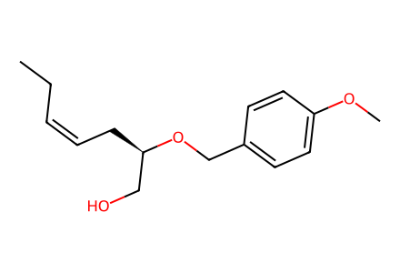
CC/C=C\C[C@H](CO)OCc1ccc(OC)cc1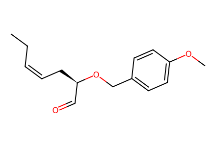
CC/C=C\C[C@H](C=O)OCc1ccc(OC)cc1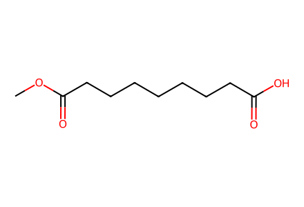
COC(=O)CCCCCCCC(=O)O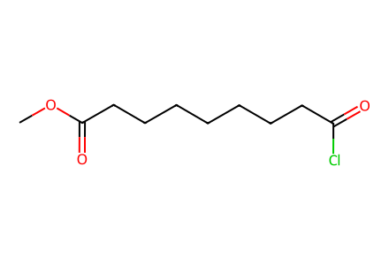
COC(=O)CCCCCCCC(=O)Cl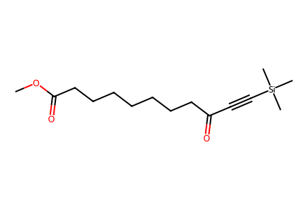
COC(=O)CCCCCCCC(=O)C#C[Si](C)(C)C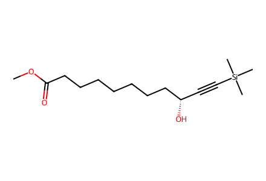
COC(=O)CCCCCCC[C@@H](O)C#C[Si](C)(C)C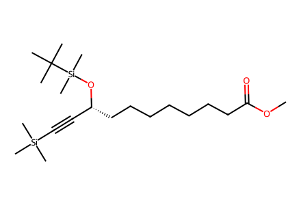
COC(=O)CCCCCCC[C@H](C#C[Si](C)(C)C)O[Si](C)(C)C(C)(C)C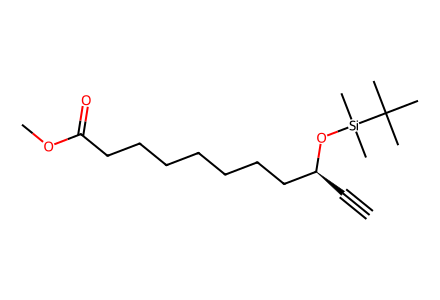
C#C[C@@H](CCCCCCCC(=O)OC)O[Si](C)(C)C(C)(C)C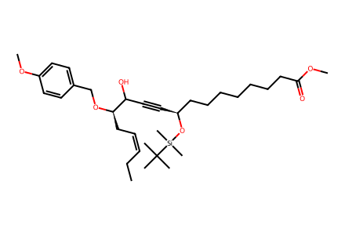
CC/C=C\C[C@@H](OCc1ccc(OC)cc1)C(O)C#C[C@@H](CCCCCCCC(=O)OC)O[Si](C)(C)C(C)(C)C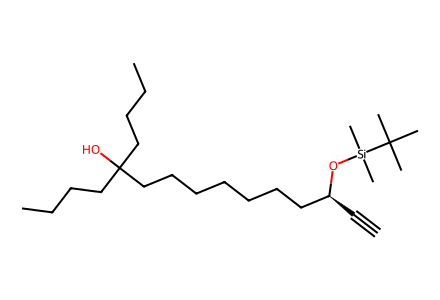
C#C[C@@H](CCCCCCCC(O)(CCCC)CCCC)O[Si](C)(C)C(C)(C)C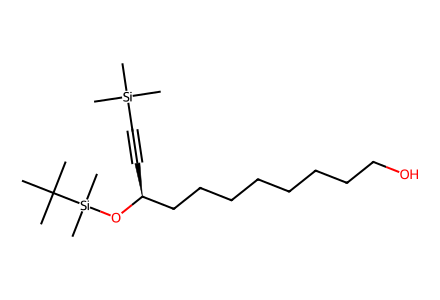
CC(C)(C)[Si](C)(C)O[C@@H](C#C[Si](C)(C)C)CCCCCCCCO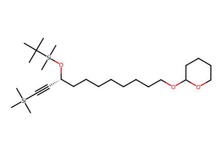
CC(C)(C)[Si](C)(C)O[C@@H](C#C[Si](C)(C)C)CCCCCCCCOC1CCCCO1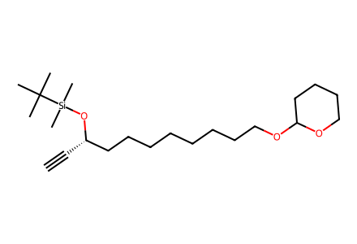
C#C[C@@H](CCCCCCCCOC1CCCCO1)O[Si](C)(C)C(C)(C)C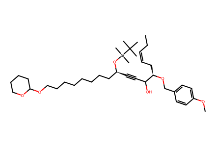
CC/C=C\C[C@@H](OCc1ccc(OC)cc1)C(O)C#C[C@@H](CCCCCCCCOC1CCCCO1)O[Si](C)(C)C(C)(C)C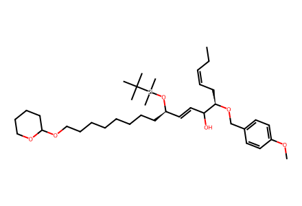
CC/C=C\C[C@@H](OCc1ccc(OC)cc1)C(O)/C=C/[C@@H](CCCCCCCCOC1CCCCO1)O[Si](C)(C)C(C)(C)C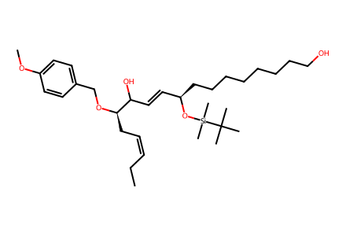
CC/C=C\C[C@@H](OCc1ccc(OC)cc1)C(O)/C=C/[C@@H](CCCCCCCCO)O[Si](C)(C)C(C)(C)C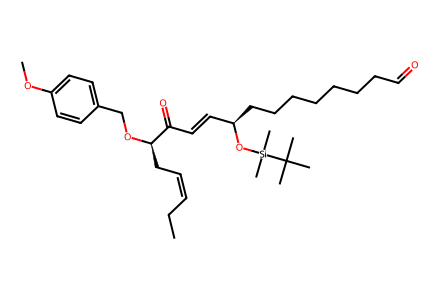
CC/C=C\C[C@@H](OCc1ccc(OC)cc1)C(=O)/C=C/[C@@H](CCCCCCCC=O)O[Si](C)(C)C(C)(C)C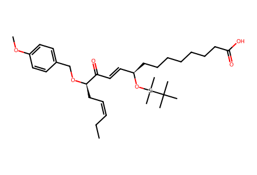
CC/C=C\C[C@@H](OCc1ccc(OC)cc1)C(=O)/C=C/[C@@H](CCCCCCCC(=O)O)O[Si](C)(C)C(C)(C)C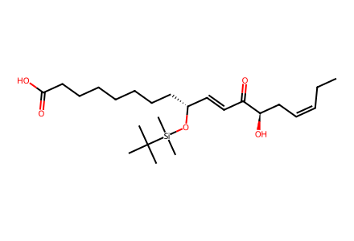
CC/C=C\C[C@@H](O)C(=O)/C=C/[C@@H](CCCCCCCC(=O)O)O[Si](C)(C)C(C)(C)C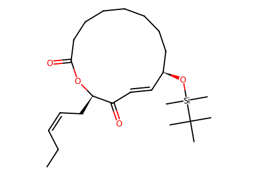
CC/C=C\C[C@H]1OC(=O)CCCCCCC[C@@H](O[Si](C)(C)C(C)(C)C)/C=C/C1=O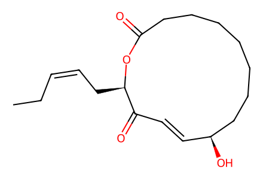
CC/C=C\C[C@H]1OC(=O)CCCCCCC[C@@H](O)/C=C/C1=O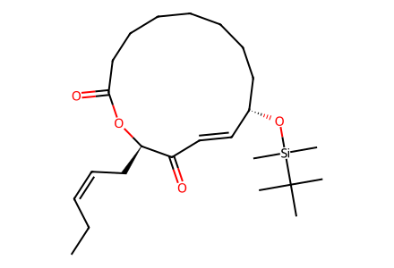
CC/C=C\C[C@H]1OC(=O)CCCCCCC[C@H](O[Si](C)(C)C(C)(C)C)/C=C/C1=O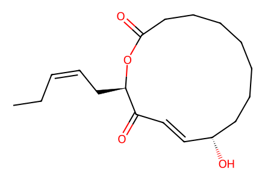
CC/C=C\C[C@H]1OC(=O)CCCCCCC[C@H](O)/C=C/C1=O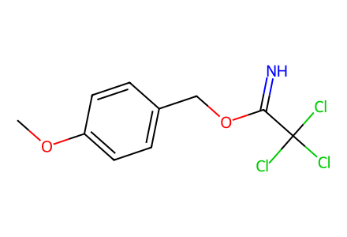
COc1ccc(COC(=N)C(Cl)(Cl)Cl)cc1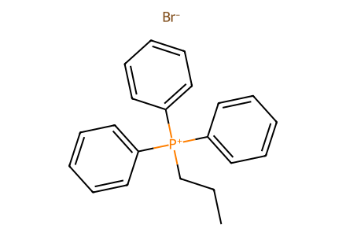
CCC[P+](c1ccccc1)(c1ccccc1)c1ccccc1.[Br-]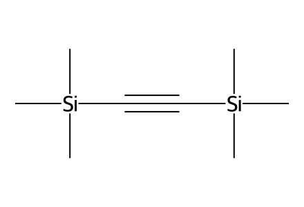
C[Si](C)(C)C#C[Si](C)(C)C
CC(C)(C)[Si](C)(C)Cl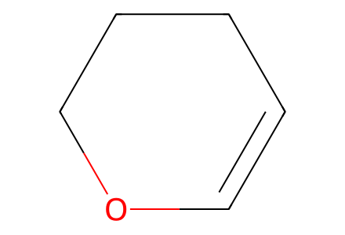
C1=COCCC1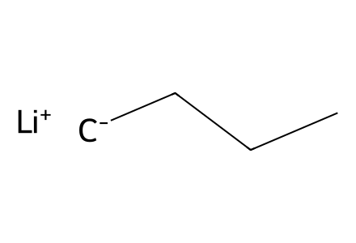
[CH2-]CCC.[Li+]